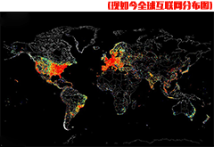
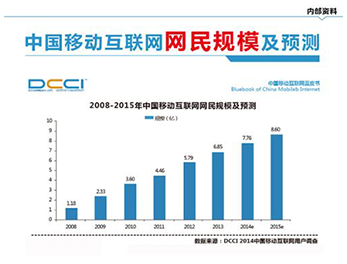
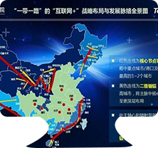
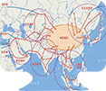

-
互联网+历史
“互联网+”是互联网思维的进一步实践成果，它代表一种先进的生产力，推动经济形态不断的发生演变。从而带动社会经济实体的生命力，为改革、创新、发展提供广阔的网络平台。通俗来说，“互联网+”就是“互联网+各个传统行业”，但这并不是简单的两者相加，而是利用信息通信技术以及互联网平台，让互联网与传统行业进行深度融合，创造新的发展生态。1994年，中国开始接入国际互联网，中国经济的格局和产业版图就此发生了巨大改变。2015年制定的“互联网+”计划推动移动互联网、云计算、大数据、物联网等与现代制造业结合，促进电子商务、工业互联网和互联网金融健康发展，引导互联网企业拓展国际市场。互联网＋”的动力：云计算、大数据与新分工网络这三点。在中国短短二十几年的发展可以说是达到了一个质的飞跃。也为了“一带一路”发展奠定了一个非常优秀的基础。

-
互联网+发展
一百多年以来，中国错过了第一次工业革命所开创的“蒸汽时代”与第二次工业革命的“电气时代”二战后的第三次工业革命虽然搭上末班车，但依旧是追赶者，只有互联网时代，中国具备了引领世界潮流的能力。 20年来，互联网产业就是中国经济的传奇，其增速超国家GDP增速5倍，互联网经济占GDP的比重也超过很多发达国家，互联网业已经完全具备拉动二三产业、带动整个国民经济全面向上的能力。如果“互联网+”行动计划获得成功，将给中国经济注入源源不断的强大动力。 2015年中国互联网经济占全部GDP4.4%(全球为3.3%)，据麦肯锡的分析报告，到2025年中国互联网经济将在GDP总体中占22%的份额。“互联网+”不仅意味着新一代信息技术发展演进的新形态、也意味着面向知识社会创新2.0逐步形成演进、经济社会转型发展的新机遇。
-
互联网+技术
我国实施向西开放发展战略，把中国早日建成丝绸之路经济带的文化交流中心、商贸流通中心、交通枢纽中心，必须创新理念，打造全方位的对外开放格局。下一步，我国进一步增强外向型经济发展意识，改变以贸易和资源为主的经济关系结构，以互联网互通建设为基础，逐步构建开放发展的经济区，形成制造业、服务业、金融业以及人文广泛交互融合的经济带。为经贸合作的可持续发展提供语言翻译、信息保障和专业培训等在互联网支持下的智力支撑。在促进互联互通方面，完善交通基础设施，加速“互联网+”，提升信息通信设施，加快发展现代物流，提高对外贸易便利化水平，坚持本地化之路，积极引进来，推动产业升级，加快技术创新，创造经久不衰的中国品牌发挥优势，加快走出去步伐，加强能源开发合作，提升国际中“一带一路”的影响力。

